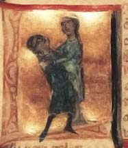
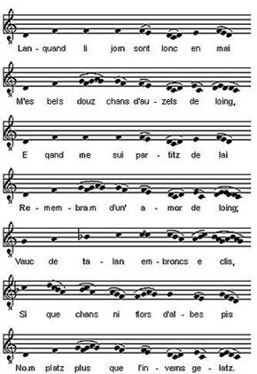
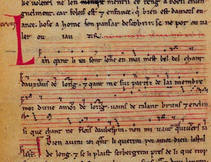

Grabación: lírica provenzal
(Haz clic en el enlace para escuchar la grabación)
Jaufré Rudel: "Lanqan li jorn son lonc en mai"
Esta grabación de la canso (pronunciado “cansó”) de Jaufré Rudel sobre su amor de lunh ("amor de lejos”) es bastante conservadora en el sentido de que sólo incluye la melodía cantada. De hecho, si consultamos los manuscritos en los que aparecen transcripciones de la música para este poema, sólo hay una línea melódica. Parece ser que la música para la poesía trovadoresca, como el canto gregoriano, era monofónica; es decir, no hay armonía ni contrapunto. Esta grabación no incluye, por ende, ningún tipo de acompañamiento para el cantante, aunque es posible que se cantara originalmente con algún tipo de instrumento musical. Tampoco hay claras indicaciones sobre el valor rítmico de cada nota en estas partituras tan tempranas. Las teorías más recientes acerca de la interpretación de esta música arguyen que no hay que observar un compás estricto, sino que se cantaban las unidades melódicas con bastante libertad rítmica. A la derecha, una imagen de un manuscrito italiano del siglo XIII que representa a Jaufré en el momento de su muerte, en brazos del objeto de su amor de lunh. Se trata de una visión inventiva de su biografía, basada en elementos de su poesía. Abajo, la melodía transcrita con notación moderna, pero sin indicaciones rítmicas, y una imagen de uno de los manuscritos originales del poema con melodía. |
 |
 |
 |
Grabación original: Peter Becker, intérprete, Teaching Medieval Lyric with Modern Technology, CD 2, (Mt. Holyoke College, 2001)